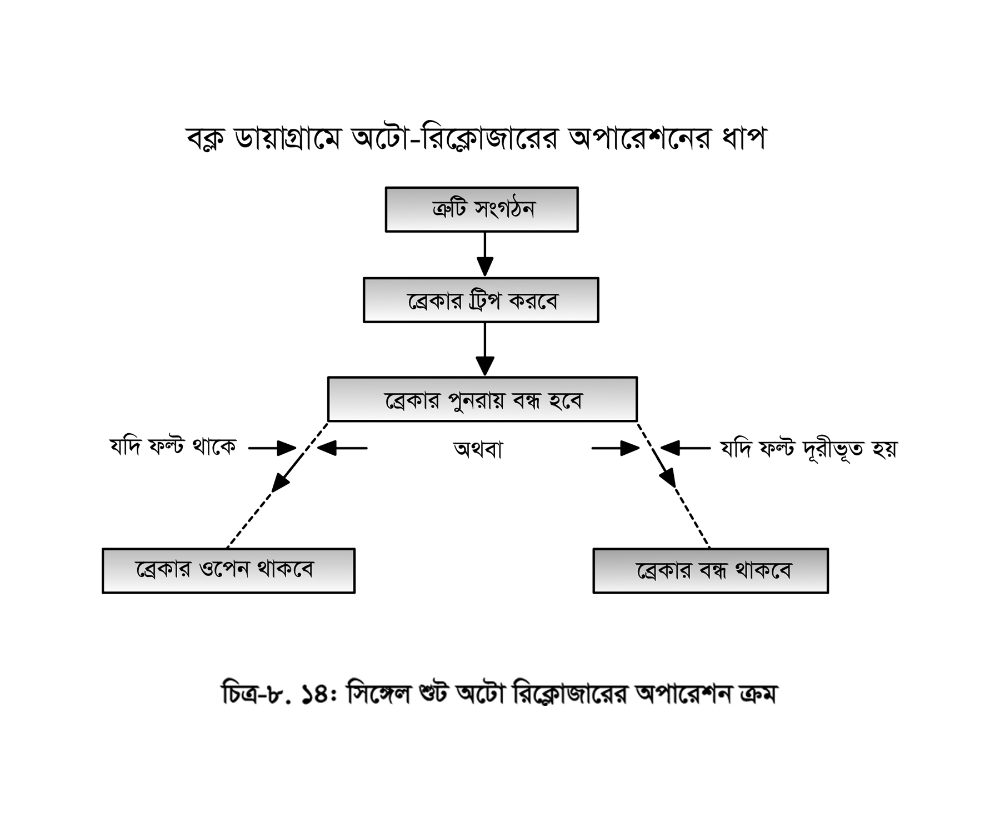
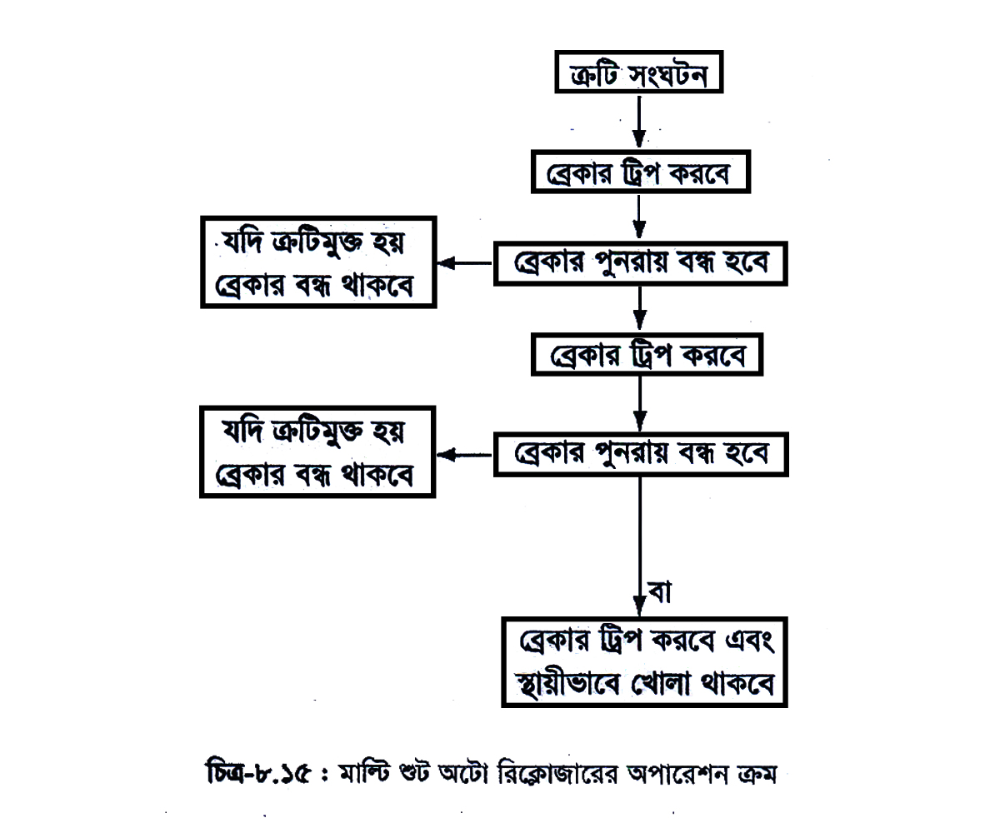

<div class="content">
    <div class="scroller">
        <p class="page-no">157</p><br><br>
        <h2></h2>
        <div>
            <p>
                এক্ষেত্রে অপারেটর উপস্থিতির মাধ্যমে লাইনকে ত্রুটি নির্ধারণ ও মেরামত করে সার্কিট ব্রেকার চালু করতে হয়। এখানে উল্লেখ্য যে, ক্ষণস্থায়ী ত্রুটি বা আপনা-আপনি সেরে যাবার মতো এবং অটো রিক্লোজার ব্যবহারের ফলে পর পর তিনবারের চেষ্টায় পুনঃ সংযোগ করা হয়। তাতে মোট সময় এত কম লাগে যে, তা সাধারণ গ্রাহকদের দুষ্টিগোচর হয় না। প্রধানত গ্রামীণ সরবরাহ বা এলটি (LT) লাইনে এটি বেশি ব্যবহৃত হয়।
                <br>(১)	সিঙ্গেল ফেজ অটো রিক্লোজিং
                <br>(২)	থ্রি-ফেজ অটো রিক্লোজিং।
                <br>চিত্রে ব্লক ডায়াগ্রামে অতি উচ্চ ভোল্টেজের জন্য সিঙ্গেল শুট্ অটো রিক্লোজারের অপারেশন ক্রম দেখানো হয়েছে।
            </p>
        </div>

        <p class="c-align">
            
        </p>

        <p class="c-align">চিত্র: ৮.১৪ সিঙ্গেল শুট্ অটো রিক্লোজারের অপারেশন ক্রম
            <span class="tooltip_my">
                <i class="fa fa-play-circle video-class" videosrc="videos/157/157-animn-182.mp4" style="font-size: 20px;" aria-hidden="true"></i>
                <span class="tooltiptext">click here to see the video</span>
            </span>
        </p>

        <p><b>গ্রামীণ বিতরণ লাইনের জন্য মাল্টি শুট অটো রিক্লোজারের অপারেশন ক্রম:</b></p>

        <p class="c-align">
            
        </p>

        <p class="c-align">চিত্র-৮.১৫ মাল্টি শুট অটো রিক্লোজারের অপারেশন ক্রম
        </p>
    </div>
</div>